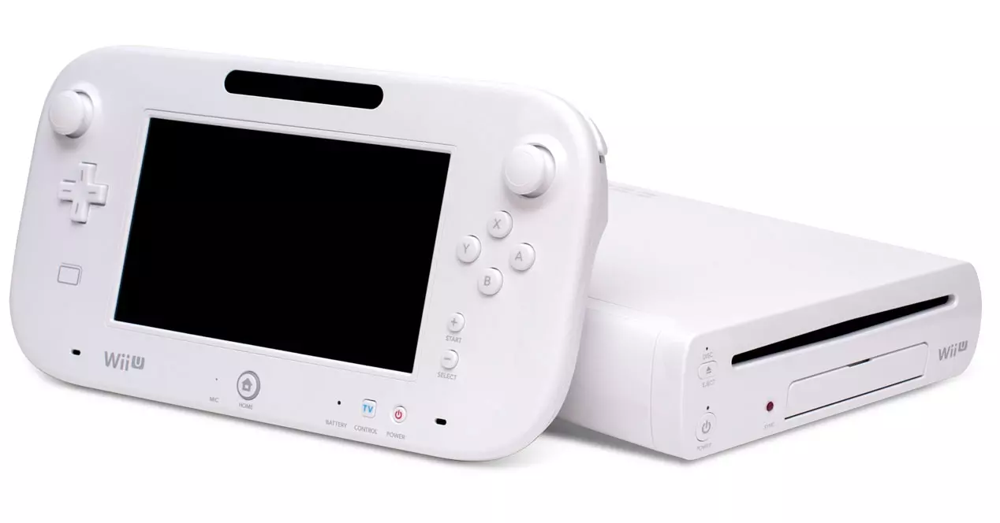

Wii U, la primera en llegar
Nintendo decidió moverse antes que su competencia y en noviembre de 2012 lanzó Wii U. Una máquina que muchos usuarios no llegaron a comprender porque no sabían si se trataba de una actualización de Wii, o una next-gen de verdad. En realidad, la máquina de los japoneses se quedó en tierra de nadie y desde prácticamente el principio quedó claro que no había muchos third parties apoyando con sus franquicias. La poca potencia de la consola apenas permitía realizar ports desde las nuevas máquinas que estaban a punto de llegar y eso ahogó su futuro.